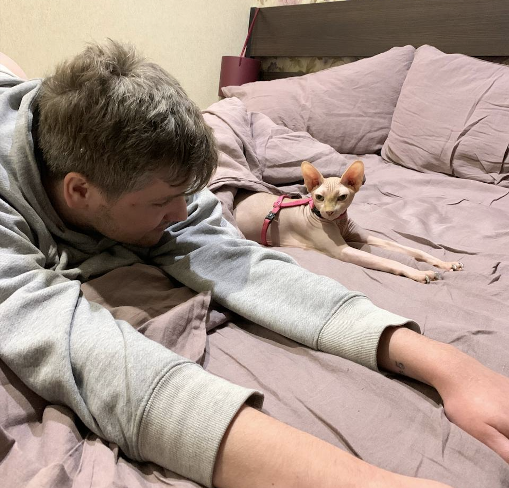

Hi, dear pet lover ❤️ We greatly appreciate your help. Here is instructions for all popular questions and best prectices about our cat. Have a goot time!
Contuct ownerInstructions
How to feed a cat
- Once a day the big white bowl should be filled with dry food Royal Canin for Sphinxs (I think they should pay for Ads, I still open for work üôÉ)
- Once a day in the morning or in the evening you could give her wet food - 1 portion/pack of Purina Pro Plan (they will never pay for Ads, no chances)
- It is necessary to change water in the glass on the table and in the metal bowl in the ground
- She adores nori and arugula and especially grass from the balcony
How to clean a cat
- Cats of this breed often sweat, so they need to be bathed once a week. If the cat starts to smell like mushrooms in the forest after rain, it is dirty
- In this case, it is necessary to value the problem, if it can wait, wait for another 2-3 days. Because she doesn't like to take bath
- If bathing is unavoidable, the water should be comfortable for washing human hands, use special shampoo and purple sponge. The procedure ends with a rubdown with a small brown towel